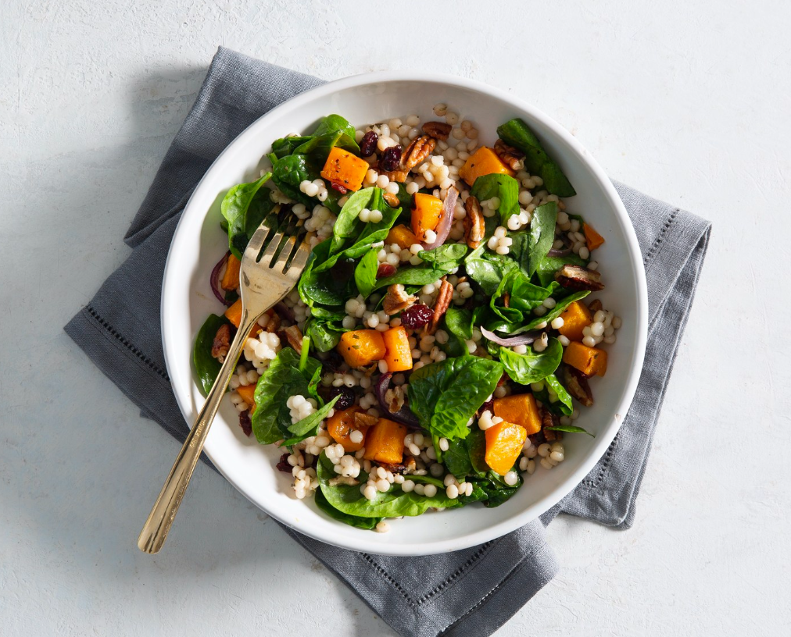

Autumn Harvest Squash and Pearl Couscous Salad

A zesty, healthy pick-me up that is simple to make and loaded with fresh fall flavours!
Source: LittleSpiceJar.com
This pearl couscous salad is the epitome of Autumn! Loaded with roasted butternut squash chunks, tons of sweet cranberries, nutty pecans, all tossed with a dijon vinaigrette.
Prep Time: 15 Minutes
Cook Time: 25 Minutes
Total Time: 40 Minutes
Portions: 4 Servings
Ingredients
Salad
- Butternut squash, peeled and cubed [one, medium]
- Pearl couscous, cooked to package directions [1 1/2cups, dry]
- Baby spinach [3 cups]
- Red onion, diced [1/2 cup]
- Dried cranberries [1/2 cup]
- Pecans, toasted [1/2 cup]
- Olive oil [2 tbsp]
Dressing
- Olive oil [1/3 cup]
- Dijon mustard [1 tbsp]
- Gralic powder [1/2 tbsp]
- Apple cider vinegar [2 tbsp]
- Orange juice [3 tbsp]
- Honey [3 tbsp]
Directions
- Preheat the oven to 425ºF.
- Place the butternut squash on a baking sheet, toss in olive oil, and sprinkle with salt and pepper and spread out evenly.
- Roasted squash for 20-25 minutes total, tossing halfway through or as needed.
- While the squash is roasting, prepare the couscous according to package directions.
- Add the orange juice, mustard, garlic powder, honey, apple cider vinegar, olive oil, and a pinch of salt and pepper to a mason jar.
- Screw on the lid and shake until combined. Taste and adjust seasonings as desired.
- In a large bowl, toss together all the ingredients of the salad with the dressing and serve.